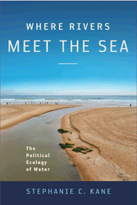

<body bgcolor="#FFFFFF" text="#000000" link="#0000FF" vlink="#CC0000" alink="#CC0000"><center><hr width="350" size="1" align="center" noshade>A creative, narrative approach to environmental destruction in urban waterscapes, focusing on neighborhood activists who pressure their governments to follow existing law<hr width="350" size="1" align="center" noshade><p><a href="https://cdcshoppingcart.uchicago.edu/Cart/ChicagoBook.aspx?ISBN=9781439909300&&PRESS=temple" target="_top">Buy this book!</a> | <a href="https://cdcshoppingcart.uchicago.edu/Cart/Cart.aspx?PRESS=temple" target="_top">View Cart</a> | <a href="https://cdcshoppingcart.uchicago.edu/Cart/Cart.aspx?PRESS=temple" target="_top">Check Out</a></p><p></p></center><!--none//--><h1>Where Rivers Meet the Sea</h1>
<H2>The Political Ecology of Water</H2>
<h3>Stephanie C. Kane</h3>
<P>cloth 1-4399-0930-X $80.50, Aug 12, <FONT COLOR=#990033>Available</FONT>
<br>paper 1-4399-0931-8 $28.95, Jul 12, <FONT COLOR=#990033>Available</FONT>
<br>Electronic Book 1-4399-0932-6 $28.95 <FONT COLOR=#990033>Available</FONT>
<BR> 246 pp
6x9
5&nbsp;figures 14&nbsp;halftones
</P><BLOCKQUOTE><I>"</I>Where Rivers Meet the Sea<I> is a crucial, animated, urgent work. I am impressed by Kane's deep, sustained immersion in the places she writes about; the fluency with which she moves between lyrical evocation and conceptual innovation; and her broad, passionate understanding of the transnational politics of water. One of Kane’s imaginative strengths is integrating discussions of maritime and riverine research. The personal sections of quotidian life and intense—and intensely relevant—personal material brighten this book that is deeply informed by geographic scholarship and political ecology. </I>Where Rivers Meet the Sea<I> is brilliant: beautifully written, conceptually rich, diverse in its approaches, and utterly cohesive."</I><br>&#151<b>Rob Nixon</b>, Rachel Carson Professor of English, University of Wisconsin-Madison</I></BLOCKQUOTE>
<P>Where fresh water appears to be abundant and generally accessible, chronic pollution may be relatively ignored as a public issue. Yet there are those whose lives, livelihoods, and traditions are touched directly by the destructive albeit essential relationship between humans and water.
<P>In her passionate and persuasively argued <i>Where Rivers Meet the Sea</i>, Stephanie Kane compares two cities and nations&#8212;Salvador, Brazil and Buenos Aires, Argentina&#8212;as she tells the stories of those who organize in the streets, petition the courts, and challenge their governments to implement and enforce existing laws designed to protect springs, lakes, harbors, and rivers.
<P>Illuminating the complex and distinctive cultural forces in the South Atlantic that shape conflicts and collaborations pertaining to particular waterfront settings, Kane shows the dilemmas, inventiveness, and persistence that provide the foundation for environmental and social justice movements writ large.
<BR>&nbsp;<h2>Excerpt</h2><P>Excerpt available at <a href="http://www.temple.edu/tempress">www.temple.edu/tempress</a></p>
<BR>&nbsp;<h2>Reviews</h2>
<p><I>"In this beautifully written book, Stephanie Kane provides nuanced descriptions of how different kinds of people—in different settings, using different strategies—care for water. Kane also describes the many ways—mundane and powerful—that people fail to care for water, offering a complex and sobering analysis of how sustainability challenges are always cultural challenges. </I>Where Rivers Meet the Sea<I> enriches the ways we can think about environmental ethics, activism, law and policy."</I> <br>&#151<b>Kim Fortun</b>, Professor, Department of Science and Technology Studies, Rensselaer Polytechnic Institute
<p><I>"In </I>Where Rivers Meet the Sea<I>, Stephanie Kane embarks on an engaging and innovative analysis of the political-ecology of aquatic spaces in two Latin American portcities, Salvador, Brazil, and Buenos Aires, Argentina. She draws on a wealth of ethnographic research from which she concludes that, despite considerable cultural and technical difficulties, people need to engage in collective practices to effect sociallyjust and ecologically sound change in highly degraded waterscapes. Her work illuminates the need for and complexities of eco-savvy human relationships with water."</I> <br>&#151<b>Gene Desfor</b>, Professor Emeritus, Faculty of Environmental Studies, York University, Toronto, Canada
<p><i>"Stephanie Kane’s beautifully written book serves as an exemplar for how criminology can engage with environmental problems.... Kane’s analysis clearly demonstrates how power positions—in the overlapping forms of economic wealth and political influence—explain not just the underlying causes of but also the varied responses (and lack of responses) to this particular environmental problem and to the various criminal activities stemming from the social conflict it generates.... She offers a coherent vision of how a future that conserves water systems for all (including nature) might look, and how we might get there."</i><br>&#151<b><i>Theoretical Criminology</i></b>
<p><i>"Throughout her fieldwork, Kane depicts vivid and lasting images complete with photographs and maps that further enable the readers to immerse themselves by visualizing the neighborhoods and waterways.... [S]he effectively presents the argument that we are not apart from nature and that the environment is very much influenced by our culture. An impressive aspect of this book is the role history plays in these narratives, and this is something Kane highlights exceptionally well.... The reader cannot help but walk away with a sense of concern, not only for the cities outlined here, but for all cities along waterways that have become polluted or struggle for access to clean water."</i> <br>&#151<b><i>Journal of Qualitative Criminal Justice & Criminology</i></b>
<p><i>"This book is a fascinating and passionate ethnography of ‘popular activism in local symbolic spaces’ of Salvador, Brazil, and Buenos Aires, Argentina.... [V]aluable for its comparative ethnographic account of how activists struggle with other non-state actors and state authorities regarding water in two port cities.... [Kane's] ethnography tells a story that is passionate, insightful and moving, revealing the difficulties and contradictions that environmental movements face when confronting entrenched and powerful actors."
</i> <br>&#151<b><i>Journal of Latin American Studies</i></b>
<p><i>"This is an important interdisciplinary work that uses a place-based approach to examine human relationships with water in the context of globalisation.... [T]he detailed explorations of the human propensity to continue to engage in devastating practices with water, and whether social and environmental justice movements can do anything about these practices is insightful.....[W]hat Kane has to say is worthwhile; she illuminates the struggles that lay people face in getting juridical institutions to implement the law to protect waters in a precautionary manner."</i><br>&#151<b><i>Environmental Politics</i></b>
<p><i>"[A]n engagingly-written ethnography on the legal and cultural dimensions of water.... Kane's analyses shine when they are grounded in the cultural history of place.... Many of the issues, current and long-standing, that she examines find bedrock in these histories that give the stories their uniqueness of place in a globally connected world. The few words here cannot capture the thoughtful cultural analyses that occur throughout this book. The images provided by the author add welcomed dimension to the stories told."</i> <br>&#151<b> <i>Contemporary Sociology</i></b>
<p><i>"Beautifully written and refreshingly free from jargon, Stephanie Kane's </i>Where Rivers Meet the Sea<i> is a rich ethnography of the practices and the discourses spun around river and sea waters at two Latin American sites: Salvador da Bahia in Brazil, and Buenos Aires in Argentina, whose aquatic cultures Kane analyzes in their everyday but also their political and technoscientific dimensions....What emerges throughout Kane's ethnography is the disturbing tension between the pervasiveness of environmental crimes on one hand, and their elusiveness and even widespread naturalization on the other. Kane's argument that all human beings are 'implicated in toxic survival modes' is a powerful take-home lesson: one that encourages a critical reflection on various levels and shades of complicity with environmental crimes. A thought-provoking ethnography, </i>Where Rivers Meet the Sea<i> is recommended for anyone with an interest in gaining a nuanced perspective on the political ecology of water."</i> <br>&#151<b> <i>PoLAR: Political and Legal Anthropology Review</i></b>
<BR>&nbsp;<h2>Contents</h2><P>
<p>List of Figures
<br>Acknowledgments
<br>List of Abbreviations</p>
<p>1. Introduction</p>
<p><b>Part I: Salvador da Bahia, Brazil</b>
<br>2. Sense and Science at the Lake of Dark Waters
<br>3. Dune Shenanigans and Rebellious Festival Memories
<br>4. Of Sewage, Sacrifice, and Sacred Springs
<br>Coda: The Assassination of Antonio Concei&#231;&#227;o Reis</p>
<p><b>Part II: Buenos Aires, Argentina</b>
<br>5. Water History, Water Activism
<br>6. Iconic Bridges of la Boca and Madero (Dereliction as Opportunity)
<br>7. Neighbors Fight to Reverse Eco-Blind Engineering in Tigre Delta
<br>8. Convergent Protest from the Provinces: Hydroelectricity &#43; Gold Mining &#61; Water Predation</p>
<p>9. Conclusion</p>
<p>Glossary
<br>Notes
<br>References
<br>Index</p>
</P><BR>&nbsp;<H2>About the Author(s)</H2>
<P><b>Stephanie C. Kane</b> is Professor in the Department of International Studies in the School of Global and International Studies at Indiana University. She is author of <i>The Phantom Gringo Boat: Shamanic Discourse and Development in Panama</i>, and <i><a href="1419_reg.html" target="_top">AIDS Alibis: Sex, Drugs, and Crime in the Americas</a></i> (Temple). She is coeditor of <i>Crime's Power: Anthropologists and the Ethnography of Crime</i>.</P>
<BR><H2>Subject Categories</H2>
<p><A HREF="/tempress/nature.html" TARGET="_top">Nature and the Environment</a>
<BR><A HREF="/tempress/latin.html" TARGET="_top">Latin American/Caribbean Studies</a>
<BR><A HREF="/tempress/general.html" TARGET="_top">General Interest</a>
</p>
<p align="center"><a href="https://cdcshoppingcart.uchicago.edu/Cart/ChicagoBook.aspx?ISBN=9781439909300&&PRESS=temple" target="_top">Buy this book!</a> | <a href="https://cdcshoppingcart.uchicago.edu/Cart/Cart.aspx?PRESS=temple" target="_top">View Cart</a> | <a href="https://cdcshoppingcart.uchicago.edu/Cart/Cart.aspx?PRESS=temple" target="_top">Check Out</a></p><p><font face="Arial" size="1"><a href="copyright.html" onMouseOver="window.status='Web Copyright Policy';return true;" onMouseOut="window.status=''" title="Web Copyright Policy">&copy;</a> 2015 <a href="http://www.temple.edu" target="new" onMouseOver="window.status='Link to Temple University home page';return true;" onMouseOut="window.status=''" title="Link to Temple University home page">Temple University</a>. All Rights Reserved. http://www.temple.edu/tempress/titles/2231_reg.html</font></p>